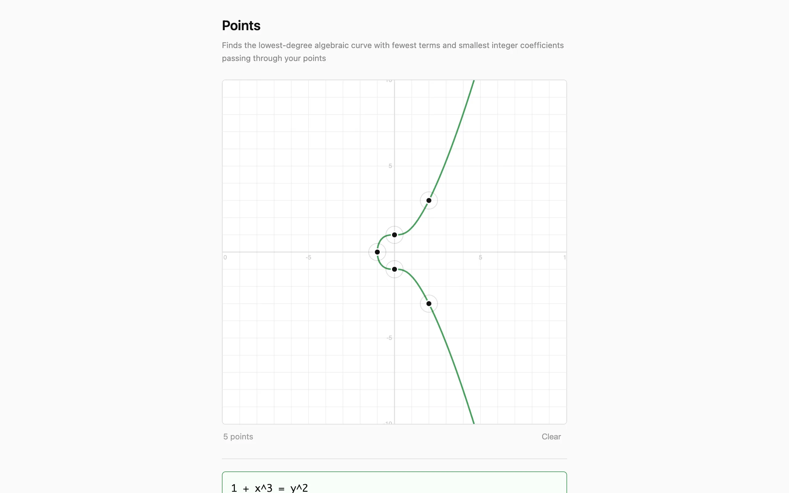

In 5th grade I played a game called Green Globs. Green dots were scattered on a coordinate plane and I had to type an equation whose graph passed through as many as possible. Points does the reverse, where I click a few points on a grid and the computer finds a curve through all of them, as an exact implicit equation with small integer coefficients like x² + y² = 25 or x · y = 6. The solver looks for lines, conics, cubics, and quartics, in that order.
Null vectors of a Vandermonde matrix
An implicit curve of degree \(d\) is \(\sum c_j \, m_j(x, y) = 0\), where the \(m_j\) are the monomials \(x^a y^b\) with \(a + b \le d\). A conic has six of them: \(1, x, y, x^2, xy, y^2\). For \(n\) clicked points I build the Vandermonde matrix \(V\) whose row \(i\) is every monomial evaluated at point \(i\), and the coefficient vector has to satisfy \(V\mathbf{c} = \mathbf{0}\). Fewer points than monomials means the null space is non-trivial and an exact curve exists. Rank tests run modulo the Mersenne prime \(2^{61} - 1\), and the null vectors themselves come out of fraction-free Gauss-Jordan elimination over big integers, so the coefficients are exact however large they get. Nine scattered points give a cubic with nine-digit coefficients rather than nothing.
To get simple equations I search sparse subsets first, for each degree from 1 to 4 and each term count from 1 upward. A subset\'s null vectors are the combinations of the degree\'s null basis that vanish on the excluded monomials, so the search walks exclusions depth first with an incremental echelon form and abandons a branch once its rows reach the nullity. Eleven points at degree 4 visit a few hundred subsets instead of 32,767. Among candidates with the same term count a score picks the smallest coefficients and penalizes curves that use only one variable.
A product of lower-degree curves is never the interesting answer, so a candidate has to be irreducible over the rationals before it wins. The five points in the screenshot also lie on the pair of lines \(y = \pm(x + 1)\), a four-term conic that would otherwise beat the cubic. A conic is reducible when its matrix is singular. For cubics and quartics I look for a rational line factor through one of the points, reading its direction off the gradient there, since a factor through none of the points would leave the rest fitting at a lower degree. A quartic that is a product of two conics slips through. Reducible curves are kept as a fallback and returned only when nothing irreducible exists up to degree 4.
Points placed by hand
Hand-placed points rarely sit exactly on the curve they sketch, and the exact curve through their grid positions can be a conic with four-digit coefficients. When the exact result has more than five terms or a coefficient of four or more digits, the solver looks for a curve of at most five small integer terms, up to degree 3, that passes within the gray circle drawn around every point, half a unit in radius. For each set of monomials the least-squares direction comes from inverse iteration on the Gram matrix and is rounded at multipliers up to 60. A first-order distance check throws most candidates out and Newton projection of each point onto the curve confirms the rest. The approximate curve wins only if it scores lower than the exact one and is itself irreducible. A short exact curve always stands, so two points still get the line through them, and the five points of \(y^2 = x^3 + 1\), which lie within half a unit of a hyperbola, keep the cubic.
In the browser
The solver is Rust compiled to WebAssembly and runs in a Web Worker, so the page doesn't stall while it searches. Clicked points snap to integers, though the solver scales half- and quarter-grid inputs up to integers if it gets them. The curve is drawn as the zero contour of the implicit function over an 800 by 800 grid of cells, checking each cell's corners for a sign change and interpolating the crossing along the edges. Typical queries take under a millisecond natively, and eleven scattered points at degree 4 take about 10 ms.